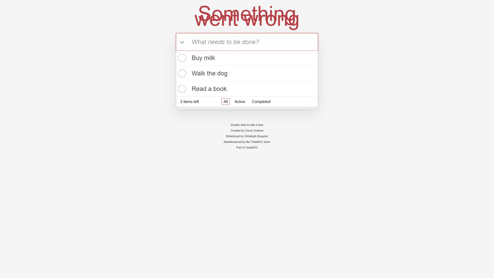

The heading "todos" reads "Something went wrong"
A good test would: the test checks it reached the right page or message.

Mutant id
text-change:heading:"todos"Would the tests fail if the app were broken? Run 2026-11-19T23-23-39 · commit 241681f
of reachable bugs caught (killed ÷ killed + survived + masked)
A good test would: the test checks it reached the right page or message.

text-change:heading:"todos"Strict replay caught these, but Kane's default adaptive healing re-authored the failing steps and the run passed on the broken app. Run suites that guard releases with --no-adaptive-heal, or gate on metrics.heal.healed_tests.
| Test | Mutants touched | Killed | Walked past | Score | Assertions |
|---|---|---|---|---|---|
tests/clear_completed_test.md | 13 | 2 | 1 | 67% | yes |
tests/complete_todo_test.md | 13 | 0 | 1 | 0% | yes |
tests/filters_test.md | 13 | 3 | 1 | 75% | yes |
tests/add_todos_test.md | 12 | 6 | 1 | 86% | yes |
tests/delete_todo_test.md | 12 | 3 | 1 | 75% | yes |
tests/edit_todo_test.md | 12 | 2 | 1 | 67% | yes |
Every mutant below was a real break in the app. Kane triaged 14 of the failing runs; it attributed 14 of them to the test rather than the product (typically "locator rot": the page changed, so the recording looks stale). From inside a single run a broken app and an outdated test look alike; Tripwire is the outside reference that tells them apart. Treat a triage of "automation bug" on a release branch as a prompt to look, not as a reason to re-record.
A good test would: the test checks what "Clear completed" is supposed to change.
Kane's triage of the failure: application issue / functional defect (93%). The app really was broken: this was a product bug.
dead-control:button:"Clear completed"A good test would: the test checks the exact number shown, not just that the element is there.
Kane's triage of the failure: application issue / ui data defect (98%). The app really was broken: this was a product bug.
rendered-number-drift:"N"A good test would: the test checks which rows are listed, or how many.
Kane's triage of the failure: application issue / ui state mismatch (98%). The app really was broken: this was a product bug.
Fixed by tripwire fix: clean run passed, mutant run failed (0719fb32-4877-4a87-9ccb-a49efe60741c / ac779f32-fac6-49ef-a82a-04be015b4e51).
rendered-item-drop:"Buy milk"A good test would: the test checks which rows are listed, or how many.
Kane's triage of the failure: application issue / ui state mismatch (98%). The app really was broken: this was a product bug.
Fixed by tripwire fix: clean run passed, mutant run failed (5daef828-0f2e-4d00-aec0-8a37a04ed519 / f8daa4ca-f366-4f0c-b17d-fa2d6fd52fdd).
rendered-item-drop:"Walk the dog"A good test would: the test checks how many rows are listed.
rendered-item-dup:"Buy milk"A good test would: the test checks how many rows are listed.
Fixed by tripwire fix: clean run passed, mutant run failed (631bc2f7-5985-4b6a-ba41-21ec49dd0d85 / ea2d1a15-f92c-4fc2-8ce7-aceb21033692).
rendered-item-dup:"Read a book"A good test would: the test checks what "[input.toggle]" is supposed to change.
Kane's triage of the failure: application issue / functional defect (97%). The app really was broken: this was a product bug.
dead-control:checkbox:"[input.toggle]"A good test would: the test checks what "[button.destroy]" is supposed to change.
Kane's triage of the failure: application issue / functional defect (93%). The app really was broken: this was a product bug.
dead-control:button:"[button.destroy]"A good test would: after following a link the test checks where it landed.
Kane's triage of the failure: application issue / navigation defect (93%). The app really was broken: this was a product bug.
wrong-link:"All"->#/activeA good test would: after following a link the test checks where it landed.
Kane's triage of the failure: automation bug / agent misstep (96%). The app really was broken: this was a product bug.
wrong-link:"Active"->#/A good test would: after following a link the test checks where it landed.
Kane's triage of the failure: application issue / functional defect (92%). The app really was broken: this was a product bug.
wrong-link:"Completed"->#/A good test would: the test checks that each row offers "[button.destroy]".
Kane's triage of the failure: automation bug / locator rot (84%). The app really was broken: this was a product bug.
missing-row-action:"[button.destroy]"A good test would: the test checks which rows are listed, or how many.
Kane's triage of the failure: application issue / ui state mismatch (97%). The app really was broken: this was a product bug.
rendered-item-drop:"Read a book"A good test would: the test checks which rows are listed, or how many.
Kane's triage of the failure: application issue / ui state mismatch (88%). The app really was broken: this was a product bug.
rendered-item-drop:"Buy oat milk"A good test would: the test checks how many rows are listed.
Kane's triage of the failure: application issue / ui data defect (97%). The app really was broken: this was a product bug.
rendered-item-dup:"Walk the dog"A good test would: the test checks how many rows are listed.
Kane's triage of the failure: application issue / ui state mismatch (96%). The app really was broken: this was a product bug.
Fixed by tripwire fix: clean run passed, mutant run failed (2c26e3f5-389a-43e7-8d02-0a585a0b7291 / 8374bf34-8fa4-408a-9d96-82639e7ca31f).
rendered-item-dup:"Buy oat milk"The mutant never fired during any test, so it says nothing about the assertions. It usually means no test exercises that path (for example, no test ever submits invalid input). Not counted in the score.
None. Mutants are excluded only with a human-approved reason in .tripwire/equivalents.json.
| Mutant | Test | Result | Attempts |
|---|---|---|---|
| The "Buy milk" row is missing from the list | tests/add_todos_test.md | killed | 1 |
| The "Walk the dog" row is missing from the list | tests/add_todos_test.md | killed | 2 |
| The "Read a book" row appears twice in the list | tests/add_todos_test.md | killed | 1 |
| The "Buy oat milk" row appears twice in the list | tests/edit_todo_test.md | killed | 1 |
17 mutants · 46.19 minutes of Kane runs (163s per mutant). Replays run from Kane's cache with healing off.
Tripwire mutates traffic and the rendered page, not source code. It tells you whether the suite notices breakage a user would see. It does not replace unit-level mutation testing, and it cannot see server-side effects that never reach the browser.